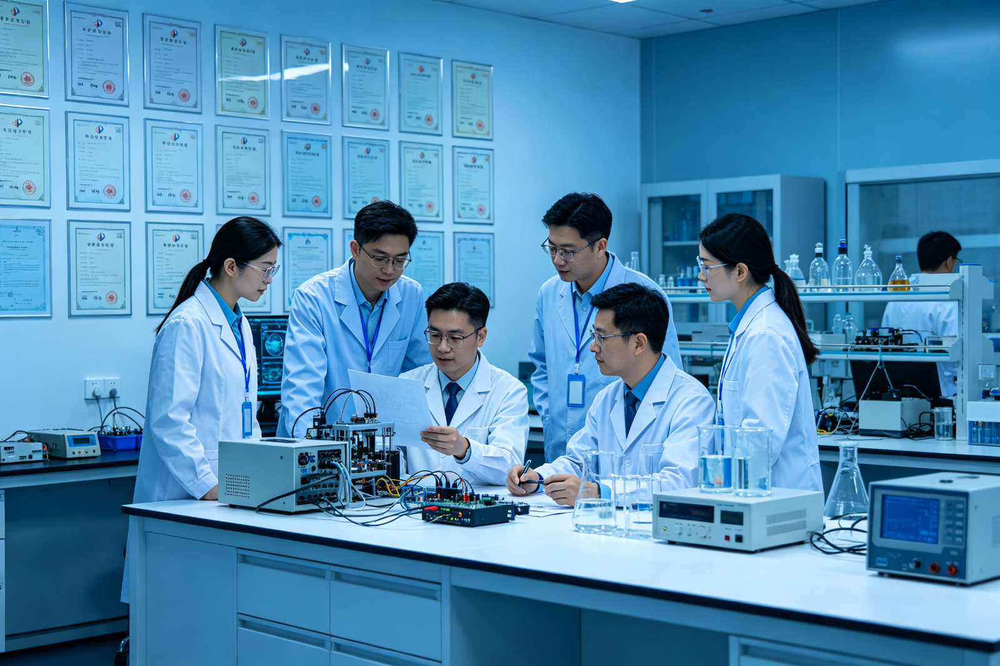

Teamwork to Tackle Major Challenges
The Team Emerged from a Shared Commitment to Long-Term Scientific Problems
In 2001, Professor Qingguo Xie established the Digital PET Laboratory at Huazhong University of Science and Technology. Public reports recall that early team members worked in a makeshift laboratory converted from rudimentary space, with limited resources for funding, equipment, and space. For a young team, it was easier to achieve short-term results by improving specific metrics along well-established technological pathways; however, the team chose to tackle the fundamental issue of pulse digitization at the core of PET technology, aiming to establish an alternative route distinct from analog-digital hybrid systems.
This choice stems from a reevaluation of the PET information chain. A 511 keV gamma photon generates visible light in a scintillation crystal, which is then converted into high-speed electrical pulses by photonic devices; electronics estimate time and energy, and thousands of channels transmit events to the computer. Traditional high-speed rule sampling faces cost, power consumption, and bandwidth pressures in multi-channel systems, while analog shaping compresses raw information. The team aims not to 'make the machine smaller,' but rather to 'adopt a different method for measuring high-speed pulses.'
The concept of all-digital PET was formed around 2004; the laboratory's current public timeline lists 2005 as the invention node for MVT digitalization methods. Unlike uniform time sampling, MVT records the times at which pulses cross multiple voltage thresholds and then reconstructs event parameters using a model. This approach redistributes hardware complexity with software capabilities and requires the team to simultaneously understand detection physics, analog and digital electronics, time measurement, statistical estimation, and system implementation.
The team was not a single-discipline research group from the outset. Early reports describe an average age of less than 30 years for this multi-disciplinary team covering over ten fields, forming a combination of medical-physics integration and medical-engineering crossover. Members must be proficient in their own specialties while also learning to understand adjacent disciplines: doctors' demand for 'earlier detection' must be translated into lesion contrast, count statistics, and spatial resolution; electronic threshold jitter ultimately affects image bias; ideal algorithm models must withstand the test of real crystals, temperature, and motion.
The team's slogan, 'Passion, Dreams, Courage, Responsibility,' appears repeatedly in multiple public reports. Passion motivates young people to enter less popular fields; dreams organize scattered tasks into long-term careers; courage supports the team in taking risks when there are no precedents; and responsibility requires that technology ultimately serve patients, the scientific community, and societal needs. These four words are not mere decoration but correspond to the four organizational qualities necessary for an original instrument to grow out of uncertainty.
'Don’t Panic' does not mean slowing down standards but maintaining judgment over long-term uncertainties. Principle innovations may take years to be understood, system integration may repeatedly fail, and medical device conversion requires enduring regulatory and market cycles. If the team relies solely on a single burst of excitement, it is difficult to sustain for twenty years; instead, vision must be broken into weekly verifiable questions, and failure must become input for the next round of design.
Each Technical Milestone Advanced the Team's Organizational Structure
The Transition from Method to Detector Demonstrated Stable Measurement
After the MVT was proposed, the first task was to prove that limited threshold crossing points could estimate time and energy under real noise conditions, different crystals, and photonic devices. Researchers established waveform libraries, designed comparators and time-to-digital converters, studied interpolation and fitting, and extended single-channel results to modules. In 2009, Qingguo Xie and international collaborators published a paper in IEEE Transactions on Nuclear Science discussing the potential of digital-sampled scintillation pulses for PET timing.
The success of a single pulse does not equate to the success of the detector. The detection module must handle channel consistency, crystal identification, light collection, temperature, dark counts, synchronization, data packaging, and real-time throughput. In the period around 2008, the team formed the MVT digital detector, subsequently advancing towards a fully digital, modular structure. This phase required electronics, mechanics, optics, and software personnel to work around a common interface, laying the groundwork for later system composability.
The Transition from Detectors to Animal PET Required Large-Scale System Coordination
In 2010, the PETLab and industry teams completed an animal all-digital PET system. Issues exposed at the system level far exceeded those of individual modules: different detector time bases must be consistent, mechanical geometry must fit into the system matrix, scattered and random coincidences need correction, data acquisition software cannot drop packets, and reconstruction must complete within a reasonable timeframe. Animal imaging pushed 'method feasibility' to 'system usability'.
Small animal PET also brought the team into life science applications. Researchers needed to learn about animal anesthesia, tracers, phantoms, and ethics, as well as discuss truly relevant metrics with biologists. In 2013, the 'Key Technologies for Small Digital PET Imaging' project won the first prize of Hubei Province Technology Invention Award, recognizing both technological innovation and collaboration between universities and industrial partners such as Suzhou Rayence.
The Transition to a Clinical Whole-Body System Transformed Evaluation Criteria
Around 2014, the team decided to develop a human clinical all-digital PET system. The human body system has larger detection areas and more channels, with stricter requirements for reliability, radiation safety, electromagnetic compatibility, mechanical load-bearing, patient workflow, and data protection. Research prototypes allowed engineers to troubleshoot nearby, but clinical equipment must operate stably according to standard procedures and pass quality system and regulatory reviews.
Public records indicate that the first prototype of a clinical all-digital PET was completed in 2015. Rapid integration benefited from modularity, but true clinical translation still took years: the equipment underwent trials at clinical institutions such as Sun Yat-sen University Affiliated First Hospital and Affiliated Tumor Hospital to verify safety and efficacy; obtained medical device registration certification in 2019; and was put into clinical operation at Ezhou Central Hospital in 2020. The technical team evolved from 'inventors' to a system team understanding clinical, quality, and regulatory requirements during this process.
A Family of Instruments Shifted the Organization from Projects to Platforms
After proving the feasibility with clinical systems, the team did not stop at general PET but developed specialized brain PET, helmet-style PET, dual-dynamic small animal PET, plant PET, and online monitoring for proton therapy. Each instrument has new application partners and evaluation tasks but shares crystals, SiPMs, MVT detectors, data interfaces, and reconstruction software. The organizational structure shifted from focusing on single-machine breakthroughs to maintaining a technical platform supporting multiple projects.
Public timelines show that proton PET principle systems made progress in 2017, specialized brain all-digital PET entered research around 2018, and plant PET, helmet PET, and dual-dynamic PET achieved phase results in 2020; the second-generation clinical all-digital PET/CT was approved in 2022, and the specialized brain system was approved in 2023. Recent standards CMOS SiPMs, ASIC detector chips, PnI software, and a 135 cm axial field of view system have further expanded team boundaries.
- Principle layer:MVT changes the sampling coordinates of high-speed flickering pulses;
- Component layer:All-digital, modular detectors transform principles into combinable units;
- System layer:Animal and clinical PET validate large-scale synchronization, acquisition, correction, and reconstruction;
- Application layer:Hospitals, life sciences, and particle therapy place equipment in real-world tasks;
- Platform layer:Specialized geometry, open software, and a complete innovation chain support continuous derivation.
A Multidisciplinary Research Team Constitutes the Invisible PET System
Xie Qingguo Connects Fundamental Principles across the Complete Technical Chain
Xie Qingguo is the founder of the laboratory and a principal initiator of all-digital PET. He has long been engaged in research on detection and imaging methods and instruments. His core role not only involves proposing the MVT (Maximum Violation Technique) concept and the idea of all-digital PET but also lies in persistently advancing the principle from detectors to systems and applications. Public records show that he has worked in both medical physics and high-energy physics environments, a cross-disciplinary background that helps the team connect particle detection issues with medical needs.
As the team leader, Xie Qingguo also takes on the responsibility of direction setting and resource organization: securing basic research and major instrument support when outcomes are uncertain, deciding to challenge clinical whole machines after success in animal systems, and promoting industrialization and specialized applications once technology matures. Original teams often lack not a clever solution but someone willing to take continuous responsibility for a long-term roadmap.
Xiao Peng Produces Reliable Images from Incomplete Data and Novel Geometries
Xiao Peng has long been dedicated to PET image reconstruction and the design of novel systems, focusing on low-data scenarios, list-mode data acquisition, and flexible system architectures. Modular PET may employ flat-panel, helmet-shaped, or variable-geometry configurations, which do not always provide full angular coverage or uniform sensitivity; therefore, reconstruction algorithms must incorporate the physical characteristics of the system into statistical models. The algorithm team thus does not merely 'beautify images' at the end but participates in evaluating whether data is sufficient to answer research questions during the instrument design phase.
In terms of talent development and public responsibility, Xiao Peng frequently appears in team records. During the COVID-19 pandemic in 2020, he analyzed hospital needs with his team members and organized material support; when discussing young teams, he emphasizes the importance of vision, capability, and moral character. In interdisciplinary laboratories, technical mentors are also shapers of collaborative methods and value judgments.
Nicola D’Ascenzo and Valeri Saveliev Bring International Particle-Detection Expertise to the Team
Nicola D’Ascenzo has a background in high-energy particle physics and detector technology, participating in research on SiPMs (Silicon Photomultipliers), photon detection, readout electronics, and imaging components. Valeri Saveliev is an expert in the early development of silicon photomultiplier detectors. The addition of these two international scholars enables the team to connect PET with broader single-photon, high-energy particle, and semiconductor detector technologies, reflecting the team's global approach to recruiting talent based on problem-solving needs.
International members are not merely 'external advisors' but must take on design, testing, and student mentoring roles within the same laboratory and project phases. Cross-cultural collaboration brings differences in terminology, work habits, and evaluation methods, yet it also compels teams to document implicit experience into clear interfaces and verifiable metrics. Public reports indicate that Nicola has been working in China for a long time and participating in team building, demonstrating that cooperation has reached the level of shared living and research.

Wan Ling Transforms Hardware Capabilities into a Scalable Software Platform
Wan Ling focuses on the Plug-n-Image (PnI) technology framework and imaging software. All-digital PET brings more raw data to computers; without proper software architecture, flexibility can quickly become unmanageable complexity. PnI layers device descriptions, algorithm modules, and imaging protocols, allowing different detector geometries and processing workflows to be combined, enabling new algorithms to enter real-world data, and establishing a common language for cross-project reuse.
The software team is also responsible for data governance, privacy protection, resource scheduling, and system traceability. Algorithm updates for clinical equipment cannot be released casually like ordinary applications, while research software requires rapid experimentation. Balancing innovation speed with validation responsibility is key to the long-term development of all-digital platforms.
Zheng Rui, Xi Daoming, Li Bingxuan, and Colleagues Deepen Research across Materials, Detection, Electronics, and Systems
Zheng Rui focuses on new materials and methods for single-photon radiation detection, involving scintillation materials, soft X-rays, and imaging detectors. Xi Daoming has long been involved in MVT electronics, FPGA digitization, and detector research. Teachers and engineering backbone members such as Li Bingxuan jointly supplement the direction of detectors, instruments, and applications. Crystal uniformity, optical coupling, time measurement, mechanical precision, and system calibration may seem disparate but collectively determine the measurement limits of images.
Zhang Bo, Chen Fang, and the Industrial Engineering Team Advance Systems from Imaging to Delivery
Zhang Bo joined the laboratory as a student early on and later took charge of the commercialization and organizational management of clinical all-digital PET. In public reports, he recalls advancing clinical systems in cramped spaces with limited resources, also converting modular technology advantages into research cycles, production testing, and service capabilities. Industrial engineers bring market demands, quality systems, and manufacturing standards that expose weak points in laboratory prototypes.
Chen Fang and other members participate in intellectual property management, industrial cooperation, and external communication. Principle innovations require patent and standard protection; collaboration requires clear definitions of future intellectual property rights, licenses, and joint achievements. Industrial teams ensure that research outcomes receive continuous resources while preventing short-term sales goals from replacing long-term scientific directions; the tension between these needs transparent governance.
Graduate Students and Early-Career Researchers Make Every Technical Interface Work
A significant portion of instrument development is carried out by graduate students and young engineers, including tasks such as welding and debugging circuits, setting scan thresholds, building phantoms, cleaning data, writing reconstruction algorithms, guarding experiments at night, documenting failures, and communicating with hospital engineers. Early team members like Zhu Jun and Yuan Rong are mentioned in the team report; more recently, young researchers such as Mu Dengyun and Qiu Ao have taken on simulation and system validation tasks for proton PET research. Behind each name lies a relay of knowledge across generations.
Students do not merely execute tasks. The early team adopted a modular management approach, entrusting students with the responsibility to handle research, integrated projects, and support work independently, while mentors focused on guiding the overall direction and development planning. This method allows young people to face real system responsibilities earlier but also comes with trial-and-error experiences. The team needs to protect this autonomy through code reviews, experimental records, cross-training, and safety protocols.
Researchers Convert Disciplinary Boundaries into Interfaces for Collaboration
The first role is to jointly define the problem. Clinicians say, 'Small lesions are not visible,' while physicists break this down into counts, scatter, motion, and partial volume effects; materials scientists assess light yield and attenuation times; electronics engineers evaluate time jitter; and algorithm developers analyze system matrices and noise. Only by translating natural language requirements into measurable metrics can the team know which layer to change.
The second role is to enable error tracking along the chain. Abnormal spectral data may originate from crystals, SiPM bias voltage, thresholds, temperature, or calibration; image streaks might come from failed channels, dropped packets, geometric deviations, or reconstruction issues. Interdisciplinary team members review raw data together to avoid each specialty interpreting problems within its own boundaries alone. Full-digital data makes tracking possible, and team collaboration ensures it actually happens.
The third role is deciding when to stop optimizing local metrics. Smaller crystals may improve intrinsic resolution but increase channels, reduce light collection efficiency, and raise costs; a longer axial field of view enhances sensitivity but complicates data and correction processes; more open software facilitates research but expands validation scope. System leaders must balance tasks, risks, and resources.
The fourth role is to bridge the 'valley of death.' Between method papers and medical products lie engineering, clinical validation, registration, and market entry. Hospitals provide real needs and cases; enterprises establish quality and production systems; government and research projects offer long-term support; intellectual property personnel organize outcome boundaries. The team core does not aim to turn every role into a scientist but ensures that each role shares evidence and timelines.
The fifth role is maintaining continuity. Over two decades, students graduate, components become obsolete, software updates, and standards change. If knowledge resides solely in one member's mind, the team effectively restarts every few years. Documentation, interfaces, test data, code versions, calibration phantoms, and shared rituals form organizational memory, which also constitutes invisible research infrastructure.

Team Culture Empowers Early-Career Researchers while Requiring Collective Scrutiny
Early reports characterized the Digital PET team as 'empowering young people to lead.' This is not an absence of mentorship but rather a distribution of problems to those who are truly hands-on, allowing students to participate in research units, project management, and laboratory support. Young members understand costs when making decisions and develop systemic perspectives when bearing consequences. For complex instruments, merely completing a segment of code or circuitry does not suffice to cultivate leadership; one must experience interface negotiations and on-site troubleshooting.
The team emphasizes the importance of both interest and societal needs. Interest sustains long-term research efforts, while societal needs prevent technology from becoming self-referential. PET's focus on tumors, brain diseases, and precision treatments naturally endows it with public value; however, the more one stresses mission-driven work, the more one must respect data boundaries to avoid overstating early experimental results as clinical capabilities. Rigor itself is a responsibility.
Internationalization is another cultural choice. The team brings together researchers from China, Italy, Russia, Finland, and other backgrounds and maintains long-term exchanges with international institutions. The true essence of internationalization is not merely the display of English, but allowing different academic traditions to question the same data, and enabling students to learn reproducible standards through joint experiments and papers.
The team also places social responsibility above research. During the COVID-19 pandemic in 2020, members organized supplies, analyzed hospital needs, and Zhang Bo and Fang Lei completed equipment installation and debugging within a short period to provide on-site support. In 2021, the Digital PET medical team supporting Hubei received the Youth May Fourth Medal of Honor from Hubei Province. This experience demonstrates that high-end instrument teams can also organize engineering resources and take on site responsibilities during public crises.
The cultivation of talent should not be measured solely by the number of papers and patents. The laboratory's open philosophy emphasizes 'becoming a person is more important than becoming talented, growth is more important than success.' For today’s research teams, this means establishing author contribution norms, respecting experimental subjects, reporting negative results, protecting data, avoiding conflicts of interest, and accurately acknowledging the contributions of technicians, clinical coordinators, and engineers.
Team Perspectives Connect Past Experience with Future Ambitions
At different stages, public statements by team members form a thread of thought. Below are brief excerpts combined with their release contexts; they are not interviews rewritten for today but come from internal reports and publicly available materials.
The 'contribution' mentioned here first refers to concepts, methods, and verifiable systems. Xie Qingguo repeatedly emphasized that obtaining the registration certificate is just the beginning; new technology must achieve true success through widespread application, iterative optimization, and actual benefits. Looking back, the team values most the validation of their approach's feasibility; looking forward, the evaluation criteria shift from 'whether it was made' to 'whether it is long-term reliable and beneficial to users.'
This reminder sets a restrained future outlook for the team. The value of medical devices is proven through multi-center evidence, long-term operation, and cost-effectiveness; the value of scientific instruments is demonstrated by external researchers generating new knowledge. Original innovation brings technological potential, but converting this into social benefits still requires collaboration among hospitals, industry, regulators, and users.
Xiao Peng connects honors with talent development, hoping that young members possess both vision and character. For the next generation of researchers, technical ability is just a starting point; being able to explain complex issues across different disciplines, collaborate under pressure, acknowledge uncertainty, and take responsibility for outcomes are what major instrument teams truly need.
Zhang Bo's experience represents vertical growth within the team: students form an identity through theoretical research and later enter engineering and industrial organizations, bringing laboratory knowledge to products. The future team still needs cross-stage talent and a more institutionalized career path for engineering, ensuring that long-term maintenance, quality, and service work receive the same respect as the first paper.
Wan Lin's judgment on the future focuses on 'hardware minimization and software maximization': a more open software platform will attract researchers from computer science, mathematics, artificial intelligence, medicine, and biology. In public materials, Xiao Peng looks forward to next-generation ultra-fine three-dimensional coding and high-density readout detectors, providing better infrastructure for algorithm developers. These expectations point towards one thing: the future team will move from 'building a machine' to 'creating a research ecosystem.'
Key Breakthroughs Emerge through Coordinated Teamwork
Clinical or Scientific Questions Enter the Requirements Pool
For example, in brain-specific PET, the requirement is not a vague 'build a clearer machine.' Neurology and nuclear medicine teams need to specify target diseases, brain region scale, tracers, patient motion constraints, and quantitative endpoints; the systems team determines bore diameter, axial coverage, opening size, bed body, and head fixation; the detector team estimates crystal dimensions, channels, and penetration depth; the algorithm team assesses edge-of-field and attenuation correction biases.
During requirement review, each specialty must present 'non-negotiable conditions' and 'negotiable conditions.' Doctors may require full coverage of the cerebellum, mechanical teams warn about shoulder and coil space constraints, electronic teams set power consumption limits, and algorithm teams explain that missing angles can be compensated by models but will increase uncertainty. The project leader must convert these conditions into a common specification rather than letting the loudest specialty dictate everything.
Principle Validation Enables Small Teams to Eliminate Unproductive Paths
Before building the entire machine, materials and detector personnel test light yield, energy, time, and positioning with single crystals, crystal arrays, and radioactive sources; electronic teams scan threshold values, bias voltages, and temperatures; algorithm teams use real point spread functions and simulated geometries to judge whether targets are achievable. Manual operations are allowed during the principle phase, but raw data, wiring, firmware, and environmental conditions must be recorded for replication of success.
Failures are decomposed in weekly meetings. If time resolution deteriorates, the team first checks optical coupling, SiPM status, threshold clocks, and fitting models rather than blaming a specific group. The significance of cross-group reviews is to prevent local metrics from being 'optimized' under incorrect conditions. Only when different batches, positions, and repeated experiments all hold true does the solution enter the module phase.
Module Integration Prioritizes Interface Coordination over Isolated Performance
The detection modules must simultaneously meet requirements for mechanical installation, power supply, heat dissipation, synchronization, networking, calibration, and maintenance. A unit that performs best on a test bench may consume too much power or be uncalibratable in bulk; the team needs to choose sustainable system solutions. Interface files should specify coordinates, time units, data bits, error codes, and versions; software simulators can help upper-level development before hardware completion.
Quality personnel join at this stage, transforming research testing into repeatable incoming, process, and outgoing tests. Engineers design fixtures and automatic calibration systems, graduate students provide criteria, supply chain personnel track device batches. Fundamental knowledge is thus written into the production process; otherwise, equipment performance would depend solely on the expertise of a few skilled members.
System Integration Exposes Local Errors in Shared Coordinates
After system power-up, channel numbers increase, and new issues arise from clock trees, data congestion, temperature gradients, and mechanical tolerances. System integration personnel organize dark-field, point-source, uniform-source, and standard phantoms; software personnel automatically generate channel quality maps; algorithm personnel compare system responses at different locations. Each anomaly is linked to hardware serial numbers, firmware versions, and calibration versions.
The whole system is not just a final assembly but the first time all assumptions are simultaneously tested against reality. The team needs to set up a 'problem war room' to distinguish between safety issues, blocking issues, performance issues, and experience issues, with clear responsibility assignments and retest conditions. After resolving one fault, regression testing must be added to prevent old problems from returning in the next upgrade.
Application Validation Gives External Partners Substantive Evaluation Authority
When equipment enters animal platforms, hospitals, or beamline centers, the original R&D team cannot cherry-pick only successful data. Collaborators should operate and interpret independently according to pre-agreed protocols; they have the right to point out unacceptable workflows, non-diagnostic images, or results lacking reproducibility. External vetoes may seem to slow progress but are essential steps toward building trust within the community from internal correctness.
Feedback in applications must return to specific levels: patient motion requires joint mechanical and algorithmic improvements, scan time demands sensitivity and protocol trade-offs, clinical quantification drift necessitates checking calibration and radiopharmaceutical processes together. Relying solely on reconstruction 'tweaks' for all issues would mask true errors; attributing all problems to operator error would miss system learning opportunities.
Papers, Patents, Standards, and Products Address Distinct Questions
Papers explain new knowledge and evidence; patents define the boundaries of implementable inventions; standards establish common testing languages; products prove manufacturability, serviceability, and sustainability. The team must choose paths based on the nature of outcomes and manage the timing relationship between publication and patent applications. These four elements are not redundant versions of the same evaluation and should not replace each other.
Project retrospectives should document both technical and organizational outcomes: which interfaces were most easily misunderstood, which tests identified problems earliest, which roles joined too late, and which data can be reused in the future. Retrospectives that serve as templates for the next generation of projects enable true intergenerational accumulation within a team. The greatest legacy of a breakthrough is often not the prototype itself but rather the method that enables faster and more stable subsequent breakthroughs.
The Next Generation of the All-Digital PET Team Faces New Research Challenges
First is scale. Long-axis systems, full-event data, and dynamic whole-body imaging generate massive data streams, requiring a coordinated design of detectors, networks, computing, storage, and algorithms. Simply moving existing processes to more servers is unsustainable; instead, a layered data strategy must be established that balances retaining scientific information with real-time processing.
Second are standards. Open modules need verifiable interfaces, cross-center data requires common metadata, software updates require regression testing, and dedicated PET systems should have task-oriented performance evaluations. The team must maintain its original speed while participating in industry and research data standardization to enable external institutions to reuse the results.
Third are radiopharmaceuticals and applications. Without suitable tracers, PET detectors cannot see targets; without clear scientific questions, higher performance merely generates more purposeless data. Future teams need to involve radiochemists, pharmacologists, immunologists, neuroscientists, plant scientists, and therapeutic physicists earlier in instrument design rather than waiting until the machine is complete.
Fourth are ethics and accessibility. Low-dose and rapid imaging may expand applications for children, healthy volunteers, and longitudinal studies; however, each study still requires independent ethical review. Artificial intelligence can improve reconstruction quality but also generate unexplainable biases. High-end equipment must reduce lifecycle costs and establish training and service systems to truly enhance accessibility.
Fifth is intergenerational organization. The judgment of the founding team, early members' experience, and industrial engineering knowledge need to be institutionalized; younger researchers also need to pose new questions different from those of previous generations. A healthy team does not turn history into authority but rather a testable starting point; it does not require everyone to follow the same path but ensures continuity in shared values and quality standards.
Transform team capabilities into observable, improvable metrics
Teams also need to calibrate their collaboration like they would an instrument. They can record the cycle time from requirements to first experiment, success rate of problem reproduction, number of inter-group interface changes, completeness of data and code archiving, proportion of external teams running independently, and mean downtime for faults. These metrics are not for ranking but help leaders identify true organizational bottlenecks: whether they stem from approval delays, missing documentation, equipment scheduling issues, or knowledge concentration among a few individuals.
Research quality metrics should include the preservation of negative results, traceability of raw data, confirmation of author contributions, and review of key analyses. Speed and quality need not be inherently conflicting; stable automated testing, templates, and interfaces actually reduce rework. Major breakthroughs depend on inspiration, but for that inspiration to navigate complex systems, reliable daily processes are still necessary.
Reserve growth space for different career paths
The large instrument team requires professors, postdoctoral researchers, students, and long-term software engineers, electronic engineers, mechanical and quality personnel, clinical coordinators, and data administrators. If all members have only one promotion path through publishing papers, maintaining the platform and accumulating engineering knowledge will be undervalued. The team should establish clear evaluation criteria for technical experts to make 'dedicating ten years to stabilizing a single platform' a worthy career goal.
Student training must balance depth and breadth. Each individual should develop an irreplaceable professional capability in one direction while understanding the basic language of at least two adjacent layers. For example, algorithm students should know how detector data is generated, electronic engineering students should understand how errors enter images, and medical students should be able to read quantitative model assumptions. Interdisciplinary work does not mean everyone does everything; rather, it means knowing when and who is needed.
Maintain openness in competition while protecting originality
Original technologies require intellectual property protection and reasonable conversion returns, yet scientific conclusions need external verification. The team can open up paper methods, evaluation data, interfaces, and partial benchmarks while implementing license protections for specific chips, processes, and products; they may also provide controlled environments to allow partners to reproduce sensitive algorithms. Transparent boundaries are more conducive to long-term innovation than blanket 'full confidentiality' or 'full openness.'
Looking ahead, the team's reputation will increasingly depend on whether external users can receive assistance, data withstands scrutiny, young members grow, and partners are willing to collaborate again. A one-time lead can be caught up; continuous learning and trustworthy collaboration are the core capabilities that are hard to replicate.
From a rudimentary lab in 2001 to today's international platform, the most significant change has not been expanding space but increasing effective collaboration among various specialties around a single problem. Major challenges do not automatically become smaller with more team members; only when roles are clear, interfaces transparent, evidence shared, young people take responsibility, and failures can be discussed does collective wisdom truly form. The history of all-digital PET demonstrates that long-termism is not about waiting but generations continuing to delve deeper into a problem.
When new students first enter the lab, they inherit more than just a research topic; they also take over calibration data, failure records, partnerships, and societal commitments left by predecessors. Whether the team can transform this history into clear training and open questions will determine whether all-digital PET can continue to produce original results in the next two decades.
This article is based on the laboratory's current publicly available personnel page, development timeline, and reports archived on this site. Different historical accounts describe nodes such as 'the first prototype', 'animal system', and 'clinical system' differently; the main text prioritizes the laboratory’s current timeline and retains model numbers and phase contexts at specific systems. Direct quotations in the text are short phrases from publicly available reports, while other content is a summary based on the materials.